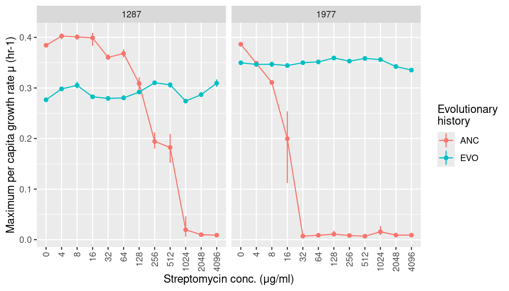
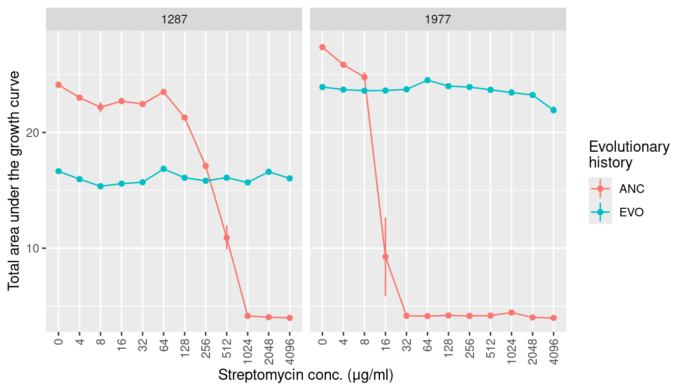

Monoculture growth
Abstract
Growth of strains at different Streptomycin concentrations
1 Introduction
Inspect the growth of both Streptomycin-sensitive (Sens/Anc) and Streptomycin-resistant (Res/Evo) forms of Citrobacter koseri 1287 and Pseudomonas chlororaphis 1977 at different streptomycin concentrations.
2 Read
3 Monoculture growth with streptomycin
We’ll now examine how the monoculture growth changed with respect to evolutionary history and streptomycin concentrations
3.1 Growth rates
Show/hide code
gr_strep <- many_spline_res %>%
mutate(hist = str_split_i(sp_hist, "_", 1),
sp = str_split_i(sp_hist, "_", 2)) %>%
summarize(ggplot2::mean_cl_boot(mumax), .by=c(sp, hist, strep_conc)) %>%
mutate(strep_conc = factor(strep_conc, ordered = TRUE)) %>%
ggplot(aes(x = strep_conc, y = y)) +
geom_linerange(aes(ymin = ymin, ymax = ymax, color = hist)) +
geom_line(aes(color = hist, group = hist), lty=1) +
geom_point(aes(color = hist)) +
labs(y = "Maximum per capita growth rate μ (hr-1)", x = "Streptomycin conc. (μg/ml)",
color = "Evolutionary\nhistory") +
facet_grid(~sp) +
scale_x_discrete(guide = guide_axis(angle = 90))
3.2 Maximum carrying capcaity (K, maximum observed OD)
Show/hide code
k_strep <- many_auc_res %>%
mutate(hist = str_split_i(sp_hist, "_", 1),
sp = str_split_i(sp_hist, "_", 2)) %>%
summarize(ggplot2::mean_cl_boot(max_od), .by=c(sp, hist, strep_conc)) %>%
mutate(strep_conc = factor(strep_conc, ordered = TRUE)) %>%
ggplot(aes(x = strep_conc, y = y)) +
geom_linerange(aes(ymin = ymin, ymax = ymax, color = hist)) +
geom_line(aes(color = hist, group = hist), lty=1) +
geom_point(aes(color = hist)) +
labs(y = "Maximum carrying capacity (K, OD units)", x = "Streptomycin conc. (μg/ml)",
color = "Evolutionary\nhistory") +
facet_grid(~sp) +
scale_x_discrete(guide = guide_axis(angle = 90))3.3 AUC (area under the growth curve)
Show/hide code
auc_strep <- many_auc_res %>%
mutate(hist = str_split_i(sp_hist, "_", 1),
sp = str_split_i(sp_hist, "_", 2)) %>%
summarize(ggplot2::mean_cl_boot(auc), .by=c(sp, hist, strep_conc)) %>%
mutate(strep_conc = factor(strep_conc, ordered = TRUE)) %>%
ggplot(aes(x = strep_conc, y = y)) +
geom_linerange(aes(ymin = ymin, ymax = ymax, color = hist)) +
geom_line(aes(color = hist, group = hist), lty=1) +
geom_point(aes(color = hist)) +
labs(y = "Total area under the growth curve", x = "Streptomycin conc. (μg/ml)",
color = "Evolutionary\nhistory") +
facet_grid(~sp) +
scale_x_discrete(guide = guide_axis(angle = 90))